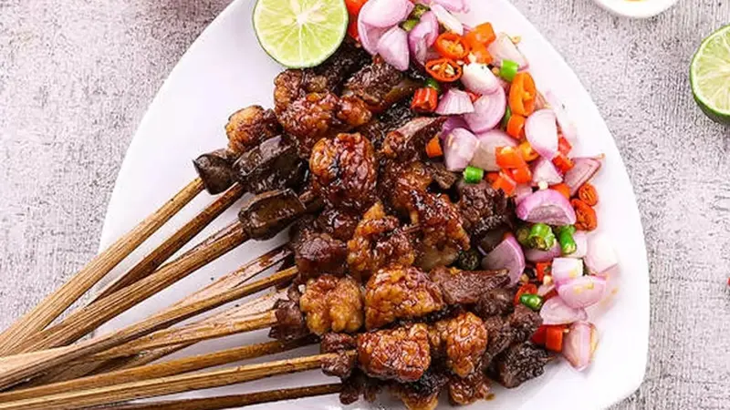

Makanan Khas Indonesia
Home
Explore
Rendang

Rendang adalah masakan daging yang berasal dari Minangkabau Sumatra Barat Indonesia. Proses memasak rendang dengan suhu rendah dalam waktu lama, menggunakan santan dan aneka rempah-rempah khas indonesia yang sedikit pedas sehingga menambah ke khas an dan kelezatannya
Soto

Soto ayam adalah makanan khas Indonesia yang berupa sejenis sup ayam dengan kuah yang berwarna kekuningan. Warna kuning ini dikarenakan oleh kunyit yang digunakan sebagai bumbu. Soto ayam banyak ditemukan di daerah-daerah di Indonesia dan Singapura.
Selain ayam bahan yang digunakan juga meliputi telur rebus, irisan kentang, daun seledri, serta bawang goreng. Terkadang soto juga disajikan dengan lontong atau nasi putih. Selain itu soto ayam juga sering dihidangkan dengan sambal, kerupuk dan koya.
Nasi Goreng

Nasi goreng adalah makanan berupa nasi yang digoreng dan dicampur
dalam minyak goreng, margarin, atau mentega. Biasanya ditambah dengan kecap manis, bawang merah, bawang putih, asam jawa, lada dan bahan lainnya; seperti telur, daging ayam, dan kerupuk. Ada pula nasi goreng jenis lain yang dibuat bersama dengan ikan asin yang juga populer di seluruh
Sate

sate, adalah makanan yang terbuat dari daging yang dipotong kecil-kecil dan ditusuk sedemikian rupa dengan tusukan lidi tulang daun kelapa atau bambu, kemudian dipanggang menggunakan bara arang kayu.
Mie Aceh

Mi aceh adalah masakan mi pedas khas Aceh di Indonesia. Mi kuning tebal dengan irisan daging sapi, daging kambing atau makanan laut (udang dan cumi) disajikan dalam sup sejenis kari yang gurih dan pedas